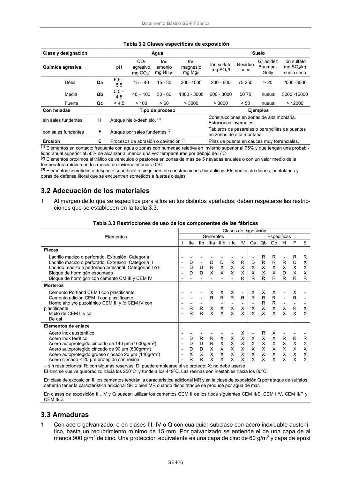

DB-SE-F Fábrica · edición 2019-12-20 · capa oficial
Documento DB-SE-F-oficial · SHA-256 del PDF e3e0805c3b4c307519c26dc34c3fdbf143d842edd013c91b0f52d2c73403d91c
Copia fiel del PDF fuente · Fuente oficial
Ficha de la disposición en la fuente oficial
Formatos: JSON del segmento · Markdown
3.2 Adecuación de los materiales 1 Al margen de lo que se especifica para ellos en los distintos apartados, deben respetarse las restric- ciones que se establecen en la tabla 3.3. Tabla 3.3 Restricciones de uso de los componentes de las fábricas Elementos Clases de exposición Generales Específicas I IIa IIb IIIa IIIb IIIc IV Qa Qb Qc H F E Piezas Ladrillo macizo o perforado. Extrusión. Categoría I Ladrillo macizo o perforado. Extrusión. Categoría II Ladrido macizo o perforado artesanal. Categorías I ó II Bloque de hormigón espumado Bloque de hormigón con cemento CM III y CEM IV - - - - - - D D D - - - D D - - D R X - - D X X - - R X X - - R X X R - D X X R R R X X R R R X X R - R X D R R D X X R R X X X R Morteros Cemento Portland CEM I con plastificante Cemento adición CEM II con plastificante Horno alto y/o puzolánico CEM III y /o CEM IV con plastificante Mixto de CEM II y cal De cal - - - - - - - - R R - - - R R X R X X X R - X X X R - X X - R - X X X R - X X X R R X X X R R X X - - - X X X R - R X - - - X X Elementos de enlace Acero inox austenítico Acero inox ferrítico Acero autoprotegido cincado de 140 µm (1000gr/m2) Acero autoprotegido cincado de 90 µm (600gr/m2) Acero autoprotegido grueso cincado 20 µm (140gr/m2) Acero cincado < 20 µm protegido con resina - - - - - - - D D D X R - R D D X R - R R X X X - X X X X X - X X X X X X X X X X X - X X X X X R X X X X X X X X X X X - R X X X X - R X X X X - R X X X X -: sin restricciones; R: con algunas reservas; D: puede emplearse si se protege; X: no debe usarse El zinc se vuelve quebradizo hacia los 250ºC y funde a los 419ºC. Las resinas son inestables hacia los 80ºC En clase de exposición III los cementos tendrán la característica adicional MR y en la clase de exposición Q por ataque de sulfatos deberán tener la característica adicional SR o bien MR cuando dicho ataque se produce por agua de mar. En clases de exposición III, IV y Q pueden utilizar los cementos CEM II de los tipos siguientes CEM II/S, CEM II/V, CEM II/P y CEM II/D.
